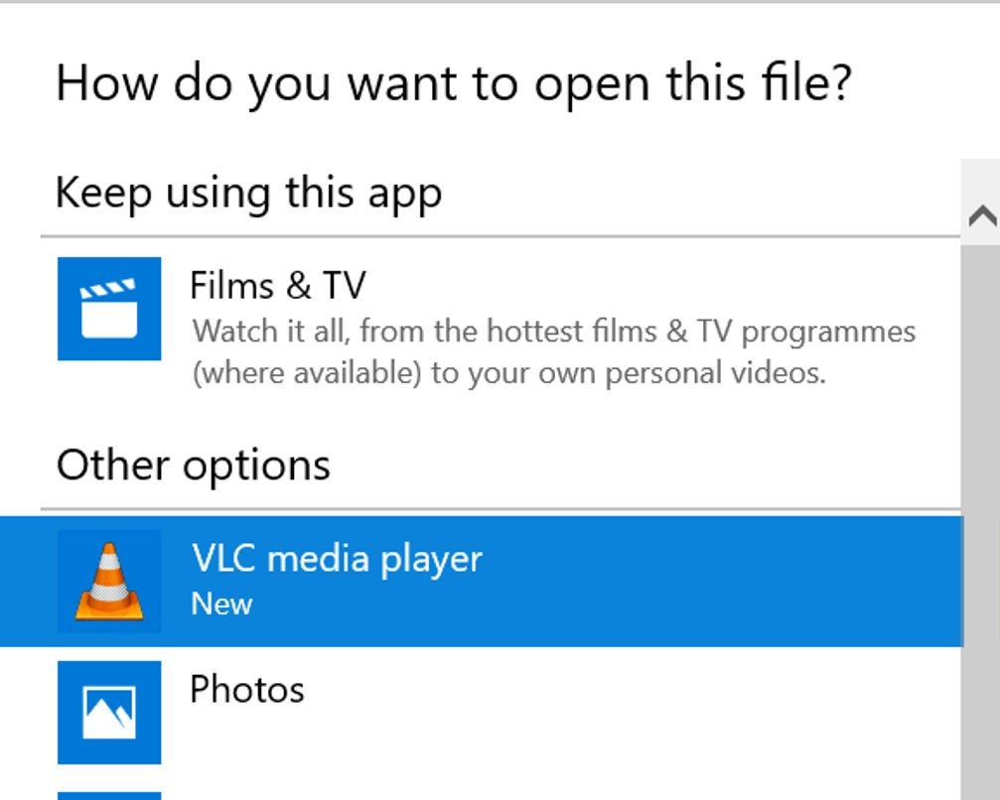

The most likley cause of a crash is corrupted perameters. In order to fix
this open the program folder and run the resetPerameters python file. After
this try to re-enter the website information and try again. If the issue
persists it is likely due to incorect input data such as incorrect URL.
This issue could also be cuased by a webpage having no keywords set. This
can be fixed by going to the webpage section on the cofiguration tool and
removing NULL keywords. NULL keywords are a red rectangle at the side of the
screen(as seen below). NULL keywords can be removed by clicking the empty red
box and adding a valid keyword to the page.

An invalid webpage adress is another cuase of a crash. You should test that the webpages are valid by following the links on thier areas in the configuration tool. If you are unable to follow one of the links, delete that webpage by clicking the ,"Remove this webpage" button twice.

An unexpected crash could also occur due to mising files. To ceck that all files are present, open the program and confirm the presence of the following essencial files:
The crash could possibly be due to a lack of internet connection.
This issue is caused by the selected keywords changing constantly between website loads. The keyword and website at fult can be identified in the "keywords:" section of the email. Remove this keyword by navigating to the page for that webpage fromt he main menu and clicking on the red box containing this keyword.
This is most likley caused because the keywords are not applicable for this specific page or update. To fix this, more keywods should be added.
This is caused by the inncorrect installation of python. Refer to the installation guaide here.
